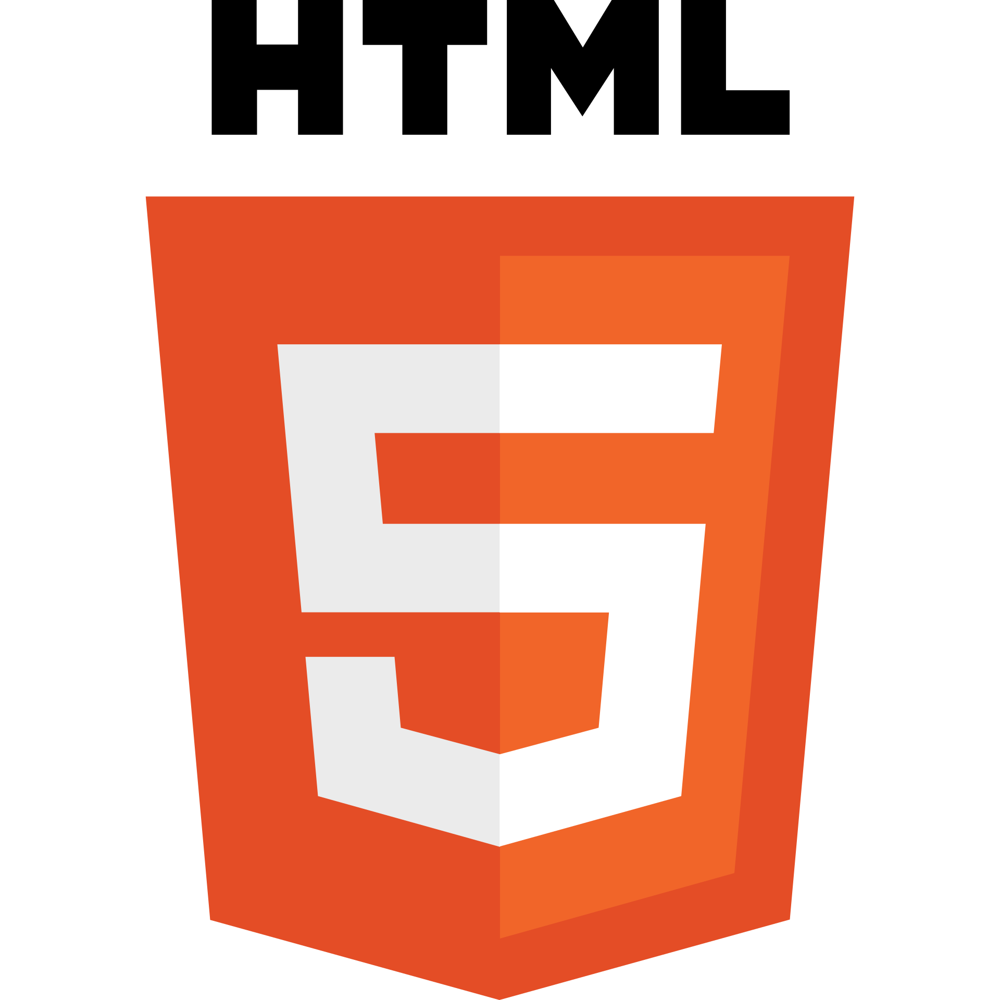

Personal Website
This project was a means of consolidating other projects into a portfolio for employers and scholarship opportunities.
I also wanted to learn how to use Flask, which this project assisted in giving a foundation of.
I hope that this project inspires me to create more projects to add to the portfolio.
Technologies Used:
